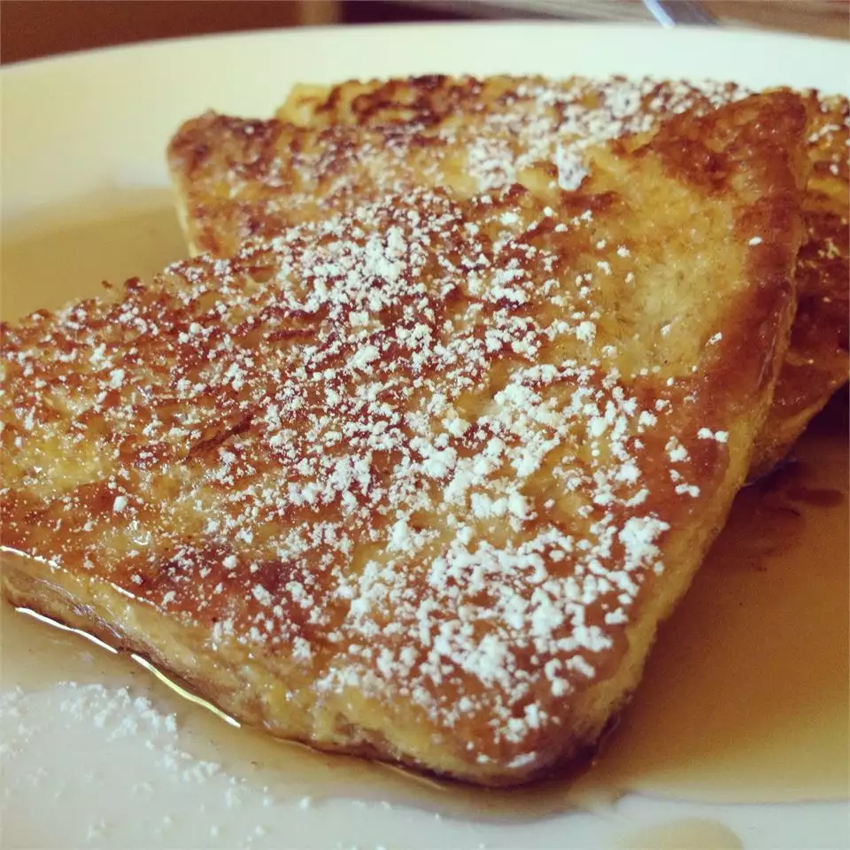

Home
Caramelized French Toast

My family loves it when I make this variation of French toast that my
grandma once made for me. It's a GREAT substitute for sticky cinnamon
rolls and a lot less hassle ... ENJOY!
Ingredients
- 4 tablespoons butter, divided
- 6 eggs
- 1/2 cup milk
- 1/8 teaspoon salt
- 8 slices bread
- 1 cup brown sugar
- 1/2 cup water
Directions
-
Melt two tablespoons of butter in a frying pan or skillet over medium
high heat.
-
Beat together eggs, milk and salt. Dip bread one at a time into egg
mixture and fry until light brown and egg is cooked.
-
After 4 slices of bread have been cooked, melt remaining 2 tablespoons
butter. Cook remaining bread slices until light brown on both sides and
egg is cooked.
-
After all bread slices have been cooked and removed from pan, add brown
sugar to pan. Stir until melted and sticky. Add water and stir. Place
French toast in caramel sauce. Turn to coat, then remove from pan.
Serve.